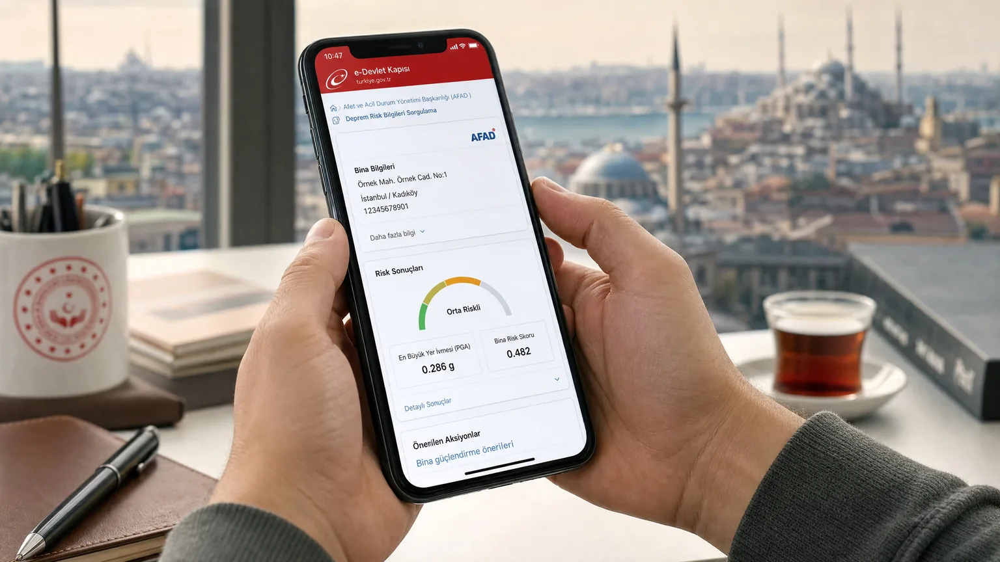

E-Devlet ile Deprem Riski Sorgulama 2026 — Adım Adım
Yaşadığınız binanın deprem riski hakkında resmî verilere ulaşmak çoğu zaman karışık prosedürler içerir. E-devlet 2024'ten itibaren AFAD ve Çevre, Şehircilik ve İklim Değişikliği Bakanlığı verilerini birleştirerek vatandaşa adres bazlı sorgulama imkânı sunuyor. Bu rehberde 7 farklı sorgulamayı adım adım gösteriyoruz.
E-Devlet Deprem Riski Sorgulama Nedir?
E-devlet kapısı (turkiye.gov.tr) üzerinden ulaşılabilen deprem riski sorgulama hizmeti, vatandaşların kendi adres veya tapu bilgilerini girerek binanın resmi kayıtlardaki risk durumunu görmesini sağlayan ücretsiz bir devlet hizmetidir. AFAD'ın deprem tehlike haritası, Çevre ve Şehircilik Bakanlığı'nın riskli yapı tespit kayıtları ve DASK poliçe bilgileri tek noktadan sorgulanabilir.
Sorgulama, sadece 'tehlikeli' veya 'tehlikesiz' gibi ikili bir cevap vermez. Adresin bulunduğu yerin spektral ivme değeri, zemin sınıfı (ZA-ZF), en yakın aktif fay ve binanın yapı denetim kaydı gibi ayrıntılı veriler de gösterilir. Bu sayede ev satın almadan önce de kullanılabilen güçlü bir araç haline geldi.
Hangi Kurumlar E-Devlet'te Deprem Verisi Sunar?
E-devlet üzerinden 4 farklı kurumun verisine ulaşılabilir: AFAD (Türkiye Deprem Tehlike Haritası), Çevre Şehircilik Bakanlığı (Riskli Yapı Tespit Kayıtları, Kentsel Dönüşüm), Tapu ve Kadastro (yapı sınıfı, ruhsat tarihi) ve DASK (zorunlu deprem sigortası).
Her kurumun farklı bir hizmet kodu vardır. AFAD verisine erişim için 'Deprem Tehlike Sorgulama', kentsel dönüşüm için 'Riskli Yapı Tespiti Sorgulama' aramaları kullanılır. Bu hizmetler 2023 sonrasında entegre edildi; öncesinde her kurumun ayrı sitesinden manuel sorgulama yapılması gerekiyordu.
Adım Adım: E-Devlet'te Bina Deprem Riski Sorgulama
1. Adım: turkiye.gov.tr adresine gidin ve T.C. kimlik numaranız ile e-devlet şifrenizi girerek giriş yapın. Mobil imza, e-imza veya internet bankacılığıyla da giriş mümkündür.
2. Adım: Üst arama çubuğuna 'deprem riski' yazın. Açılan listeden 'AFAD - Bina Deprem Tehlike Sorgulama' hizmetini seçin.
3. Adım: Adres veya UAVT (Ulusal Adres Veri Tabanı) numarası girin. Apartman dairesi seviyesine kadar detay verebilirsiniz.
4. Adım: Açılan ekranda spektral ivme değeri (Ss, S1), zemin sınıfı, en yakın fay mesafesi, deprem tehlike değeri (PGA) görüntülenir. Bu değerler TBDY 2019 yönetmeliği esasları ile yorumlanır.
5. Adım: Sonucun çıktısını PDF olarak indirip arşivleyin. Konut alım-satım, kira sözleşmesi gibi işlemlerde resmi belge olarak kullanılabilir.
AFAD E-Devlet Entegrasyonu: Neler Görülebilir?
AFAD'ın e-devlet entegrasyonunda sadece istatistiksel risk değil, son depremlerin oluş zamanı, büyüklüğü, derinliği ve merkez üssü bilgileri de yer alır. Adresinize 50 km yakınındaki son 30 günde gerçekleşmiş depremlerin listesi sunulur.
Ayrıca TDTH (Türkiye Deprem Tehlike Haritası) verisi adresin tam koordinatlarına özel olarak gösterilir. Bu harita 475 yıl içinde aşılma olasılığı %10 olan deprem büyüklüklerini hesaplar — bina tasarımında kullanılan resmi standarttır.
Kentsel Dönüşüm Risk Tespit Başvurusu E-Devlet'ten Yapılır mı?
Evet. 6306 sayılı Afet Riski Altındaki Alanların Dönüştürülmesi Hakkında Kanun kapsamındaki riskli yapı tespit başvurusu artık tamamen e-devlet üzerinden yapılabilir. 'Riskli Yapı Tespit Başvurusu' hizmetini kullanın.
Başvuru için tapu ve apartman/site yöneticisinin onayı gerekir. Tespit ücreti yaklaşık 8.000-15.000 TL arasındadır (2026 fiyatlarıyla, bina büyüklüğüne göre değişir). Sonuç 30 gün içinde e-devlet hesabınıza düşer.
DASK Poliçe ve Hasar Sorgulama E-Devlet'te Nasıl Yapılır?
DASK (Doğal Afet Sigortaları Kurumu) e-devlet entegrasyonu 2022'den beri aktif. 'DASK Poliçe Sorgulama' hizmetiyle binanızın aktif poliçesi olup olmadığını, prim tutarını ve teminat limitini görebilirsiniz.
Hasar başvurusu da e-devlet üzerinden başlatılabilir. 'DASK Hasar İhbar' hizmeti deprem sonrası ilk 30 gün içinde tamamlanmalıdır. Ekspertiz randevusu otomatik atanır.
Sonuçları Nasıl Yorumlamalısınız?
Spektral ivme değeri (Ss): 1.0 g üstü çok yüksek risk, 0.5-1.0 g yüksek risk, 0.3-0.5 g orta risk, 0.3 altı düşük risk. Türkiye'nin büyük şehirlerinin çoğu (İstanbul, İzmir, Adana) yüksek risk grubundadır.
Zemin sınıfı: ZA en sağlam (kaya), ZF en zayıf (sıvılaşma riski olan alüvyon). ZD-ZF zeminlerdeki binalar deprem dalgalarını 2-4 kat büyütür. Eğer ZE/ZF zeminde yaşıyorsanız bina güçlendirme veya kentsel dönüşüm değerlendirilmelidir.
Riskli Yapı kaydı: 'Riskli' işareti varsa bina 6306 sayılı yasaya göre yıkılma kararı almıştır. 'Tespit edilmedi' ifadesi binanın güvenli olduğu anlamına gelmez — sadece henüz inceleme yapılmamış olabilir.
E-Devlet Sorgulama Sonrası Atılacak Adımlar
Sorgulama sonucu yüksek risk gösteriyorsa şu adımları izleyin: (1) Bina deprem performans raporu aldırın. (2) Kentsel dönüşüm muhtemel ise vergi muafiyetlerini araştırın. (3) DASK poliçenizi yenileyin, üst limitte sigorta yaptırın.
Düşük risk gösterse bile bina yaşı 25+ ise rehavet etmeyin. Türkiye'de yapı denetim 2001'de zorunlu hale geldi; öncesinde inşa edilen yapıların büyük çoğunluğunda denetim eksiktir. Yapı denetim raporu olmayan binalar için ek inceleme yaptırmak şart.
Sıkça Sorulan Sorular
E-devletten deprem riski sorgulama ücretli mi?
Hayır, AFAD entegrasyonlu temel sorgulama tamamen ücretsizdir. Yalnızca riskli yapı tespit başvurusu için yetkili kuruluşa ücret ödenir.
E-devletten kira evimi sorgulayabilir miyim?
Evet, kiracılar da yaşadıkları binanın adres veya UAVT numarasıyla deprem riski sorgulaması yapabilir. Ev sahibinin onayı gerekmez.
E-devlet sonucu mahkemede delil olur mu?
Evet, e-devletten alınan AFAD ve riskli yapı tespit raporları resmi belge niteliğindedir; mahkemede ve sigorta süreçlerinde geçerlidir.
Bina deprem riski 'tespit edilmedi' yazıyorsa güvenli mi?
Hayır, 'tespit edilmedi' ifadesi henüz inceleme yapılmadığı anlamına gelir. Güvenli olduğu garanti edilmez. Mutlaka bağımsız bir performans analizi yaptırın.
DASK poliçesi olmayan binalar için sorgu yapılabilir mi?
Evet, sorgu için DASK poliçesi gerekmez. Ancak DASK'sız yaşamak yasaldışıdır ve elektrik/su aboneliği başlatmada engel oluşturur.